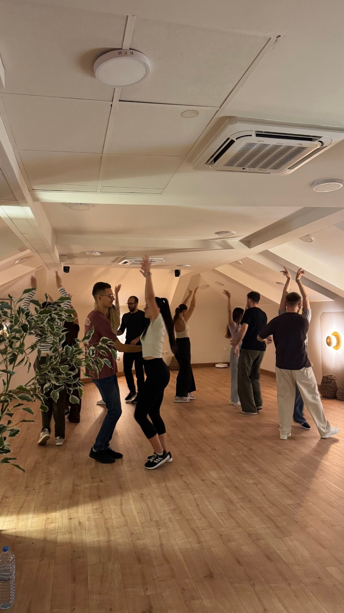
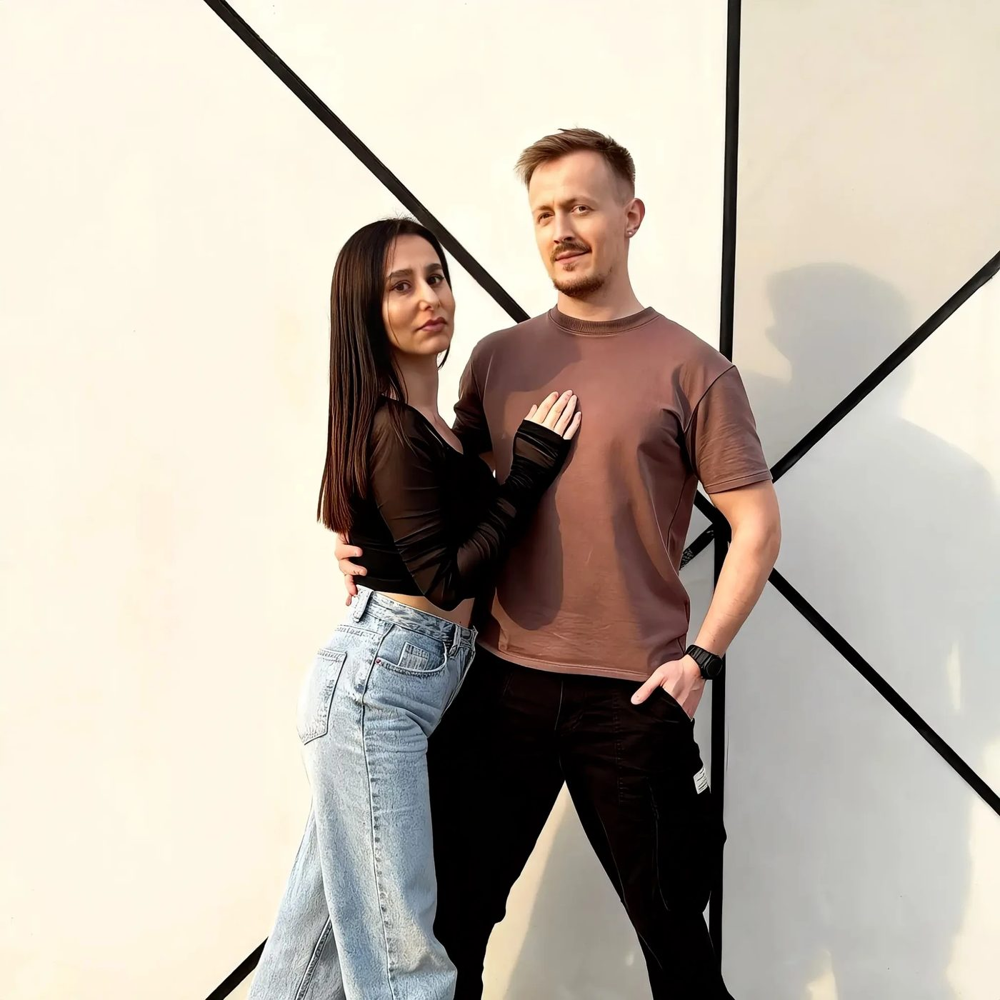

Bachata
Časovi
plesa
u Nišu
Učimo bachatu u paru, uz promenu partnera, u opuštenoj atmosferi. Većina polaznika dolazi sama, pa ti ne treba partner da bi počeo.
Piši nam na Instagramuvidimo se na plesu
Termini
Kada i gde
- TerminiUtorak i četvrtak od 18:30
- LokacijaBulevar dr Zorana Đinđića 38, Niš
- Članarina2.000 din mesečno8 časova, naplata po kalendarskom mesecu
- Pojedinačni čas500 din
Informacije o upisu objavljujemo na Instagramu. Zaprati nas na @anitainikola i javi nam se u DM.
Prijavi se u DMČasovi
Kako izgleda čas
Ples u paru
Na časovima menjamo partnere, tako da brzo upoznaš celu grupu, a dolazak bez partnera nije problem.
Korak po korak
Radimo ritam, osnovne korake, vođenje i praćenje i figure koje možeš da koristiš na plesnim žurkama.
Bez pritiska
Želimo da časovi budu mesto gde napreduješ svojim tempom, postavljaš pitanja i raduješ se sledećem treningu.
Samo za punoletne
Časovi su namenjeni odraslima, a polaznici imaju i zajedničku Viber grupu.


Mi smo
Anita
i Nikola
Plesni i životni partneri koje povezuje ljubav prema bachati i latino kulturi. Učili smo u više škola i na privatnim časovima, a naš cilj je da u Nišu gradimo prijatnu i aktivnu bachata zajednicu.
dobro došli u naš svet
Pitanja
Česta pitanja
Da li mi treba partner?
Ne. Većina polaznika dolazi sama, a na časovima menjamo partnere, tako da svako uvek ima s kim da pleše.
Kada je sledeći upis?
Sve informacije o upisu i novim grupama objavljujemo na Instagramu. Zaprati @anitainikola i javi nam se u DM.
Koliko košta?
Mesečna članarina je 2.000 din za 8 časova i plaća se po kalendarskom mesecu. Pojedinačni čas je 500 din.
Kako da se prijavim?
Pošalji nam poruku na Instagramu @anitainikola i sačekaj potvrdu mesta.
Šta da obučem?
Udobnu odeću u kojoj se slobodno krećeš i rezervne patike koje nosiš samo u sali, ne one u kojima dolaziš spolja.